El conocimiento que todo pescador merece. Agua dulce, agua salada, técnicas avanzadas y zonas locales de Andalucía.
ExplorarRíos, pantanos y lagos de interior: ecosistemas complejos donde la lectura del agua, la temperatura y la estación del año marcan la diferencia entre el éxito y el fracaso.
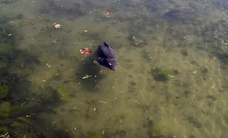
Cyprinus carpio
La reina de las aguas continentales. Se encuentra en embalses de fondo blando, con abundante vegetación acuática y zonas de poco corriente. Prefiere temperaturas entre 18–25 °C y es más activa al amanecer y al atardecer.
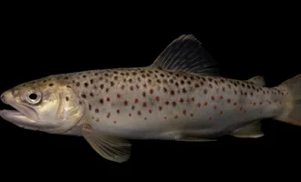
Salmo trutta
Habitante de ríos de montaña con aguas frías, bien oxigenadas y alta transparencia. Temperatura óptima: 10–16 °C. Muy sensible a la calidad del agua. En Andalucía se encuentra en los cotos del alto Genil y sierra.
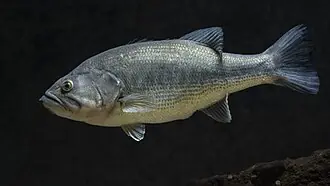
Micropterus salmoides
Depredador amboscador de aguas cálidas con vegetación. Muy agresivo en primavera durante el frezado. Busca estructuras: troncos sumergidos, orillas con cañas, transiciones de profundidad.
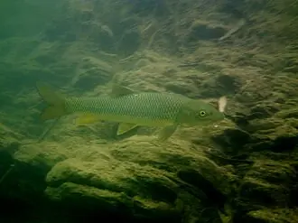
Barbus barbus / Luciobarbus sclateri
El pez más representativo de los ríos andaluces. El barbo comizo (Luciobarbus comizo) es el autóctono del Guadalquivir. Vive en zonas con corriente moderada sobre fondos de grava y piedra.
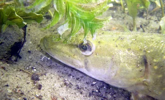
Esox lucius
Depredador solitario de grandes aguas tranquilas. Acecha entre vegetación acuática y realiza ataques explosivos. Prefiere temperaturas de 10–18 °C.
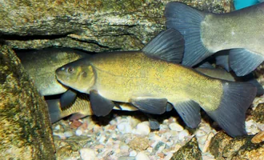
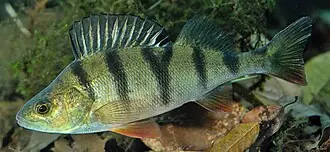
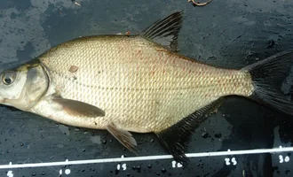
Tinca tinca
Fondos fangosos de aguas cálidas y vegetadas. Muy activa en primavera. Cebo: gusano rojo, maíz, masa dulce. Montaje de fondo ligero.
Perca fluviatilis
Depredador grupal. Spinning ultraligero con micro-jigs 2–5 g, cucharillas pequeñas y pequeños shads. Busca cardúmenes en superficie.
Abramis brama
Aguas tranquilas de embalse, cardúmenes en fondo. Cebo vegetal, pesca de fondo con feeder o bolognesa. Muy sensible al cebado previo.
El cebo es el primer contacto con el pez. La calidad de los ingredientes, la solubilidad y el perfil olfativo determinan el éxito de la sesión. Estas son las marcas de referencia que todo carpista y pescador debe conocer.
Marca española artesanal especializada en boilies de alta gama. Ingredientes seleccionados de primera calidad con formulaciones probadas en embalses andaluces y extremeños. Sus boilies de larga vida tienen una solubilidad progresiva que crea una columna de atracción continua.
Una de las marcas de cebos más reconocidas en España. Pioneros en la fabricación nacional de boilies de competición. Sus líneas SuperFruit y SuperSpice son referencia en los embalses de la península. Excelente relación calidad-precio para el carpista español.
Marca española de alto rendimiento enfocada al carpfishing de competición. Formulaciones desarrolladas por pescadores profesionales de carpfishing. Sus boilies Gold son los más utilizados en competiciones nacionales. Ingredientes premium: harina de sangre, extracto de hígado, betaína.
Una de las marcas de cebos más prestigiosas del mundo. Su gama The Source es posiblemente el boilie más vendido a nivel global. Ingredientes de máxima calidad con décadas de I+D. Referencia absoluta en el carpfishing europeo.
Referencia británica en ingredientes y boilies de máxima calidad. Su Live System ha ganado más competiciones de carpfishing que cualquier otro cebo en la historia. Ingredientes de grado alimentario y formulaciones científicas.
Marca británica de culto entre los carpistas más exigentes. Su Cell es un icono del carpfishing moderno. Ingredientes de altísima calidad con un perfil nutricional que las carpas reconocen como alimento real, no solo atractante.
Marca innovadora que ha revolucionado el mercado con su línea Krill. Utilizan krill auténtico del Pacífico Sur como base de sus boilies, creando un perfil de sabor único que las carpas detectan a larga distancia.
La división de cebos de Nash Tackle, creada por el legendario Kevin Nash. Sus Scopex Squid y Citruz son referencia. Formulaciones probadas en los lagos más difíciles de Francia e Inglaterra con los carpistas más exigentes del mundo.
Marca francesa líder en Europa. Sus líneas Concept y Probiotic son referencia en el carpfishing continental. Colaboran con los mejores carpistas de Francia, Italia y España para desarrollar cebos específicos por estación y tipo de agua.
El Mediterráneo y el Atlántico andaluz ofrecen una variedad de especies y técnicas sin igual. Desde el surfcasting en playas hasta el jigging en alta mar.
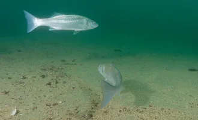
Dicentrarchus labrax
Depredador costero de gran valor deportivo. Frecuenta zonas de rompiente, estuarios, embocaduras de ríos y puertos. Activa en condiciones de viento y oleaje moderado, especialmente al amanecer y anochecer.
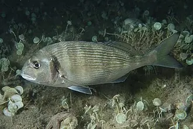
Sparus aurata
La joya del Mediterráneo andaluz. Especie de alto valor gastronómico que frequenta playas de arena fina, praderas de posidonia y estuarios. Muerde mejor con bajamar y en aguas cálidas (18–26 °C).
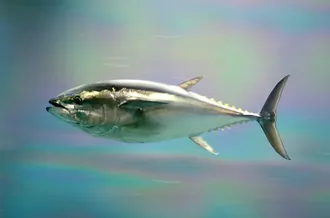
Thunnus thynnus / T. alalunga
Los grandes pelágicos del Estrecho y del Atlántico andaluz. El atún rojo es el mayor depredador del Mediterráneo. El bonito del norte (Thunnus alalunga) frecuenta aguas del Golfo de Cádiz en verano.
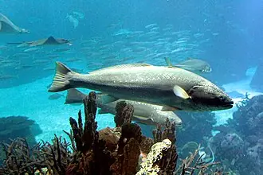
Trío de especies de gran interés deportivo y gastronómico del litoral andaluz. La corvina habita fondos arenoso-rocosos. El besugo prefiere fondos de roca entre 20–80 m. El pargo lidera en fondos rocosos del Mediterráneo.
Desde el carpfishing de alta tecnología hasta la elegancia de la mosca seca. Cada técnica tiene su filosofía, su equipo específico y su momento perfecto.
La disciplina más técnica de la pesca de agua dulce. Combina conocimiento de la biología de la carpa, preparación de cebos, lectura del agua y paciencia extrema. Se pesca con 2–3 cañas con mordedores electrónicos y el pescador descansa en bivvy.
La técnica más activa: el pescador se mueve constantemente por la orilla buscando el pez. Desde el ultraligero con micro-jigs de 1 g hasta el pesado con señuelos de 60 g para lucios y siluros.
La pesca desde la orilla en el mar. Requiere lanzamientos de 80–180 m con plomos de 100–250 g. Técnica exigente que demanda práctica de lanzamiento, lectura de la playa y conocimiento de mareas.
El arte más refinado de la pesca. El señuelo (mosca artificial) casi no pesa y el lanzamiento se realiza con el peso de la línea. Requiere aprendizaje de casting, entomología básica y lectura de corrientes.
Sistema de pesca de fondo con canastillo cebador. Excelente para barbo, carpa, tenca y brema. Permite cebar el punto exacto con el canastillo y presentar el cebo junto al groundbait.
Pesca con señuelos metálicos de plomo en aguas profundas. El jigging vertical desde barco o el shore jigging desde tierra son técnicas que han revolucionado la pesca en mar. Muy eficaz para pelágicos y demersales.
Técnica italiana de aguas someras y orillas. Caña larga (5–7 m) sin carrete fijo, con flotador y presentación natural del cebo. Ideal para sargo, dorada, múgil y lubina en orillas de mar y estuarios.
El drop shot coloca el cebo suspendido sobre el fondo con el plomo en el extremo. Permite presentaciones estáticas ultra-naturales para percas, bass y lucios. Revolucionó la pesca de spinning en Europa.
Andalucía es la comunidad autónoma con mayor variedad de ecosistemas acuáticos de España. Desde los ríos de sierra hasta el Parque Nacional de Doñana, pasando por embalses de récord mundial.
Zona de referencia en la campiña cordobesa. El embalse de Malpasillo y el río Genil a su paso por la zona ofrecen carpas de gran tamaño, barbos ibericos y black bass en abundancia.
Ver en Google MapsLos ríos de alta montaña de Sierra Nevada albergan la trucha común autóctona en cotos bien conservados. Río Genil alto, Río Monachil y Río Dílar son los más destacados de la temporada.
Ver en Google MapsPlayas infinitas del Atlántico andaluz: El Rompido, Matalascañas, Conil, Barbate. Paraíso del surfcasting con doradas, lubinas, corvinas y lenguados todo el año.
Ver en Google MapsParque Nacional con zonas periféricas donde la pesca está permitida con licencia especial. Anguilas, carpas y múgiles en las marismas. Zona de excepcional valor natural.
Ver en Google MapsEl Mediterráneo malagueño ofrece fondos rocosos excepcionales para sargo, pargo, mero y oblada. Playas como Nerja y Maro son referencia para la pesca submarina y el spinning desde roca.
Ver en Google MapsPunto donde se mezclan Atlántico y Mediterráneo. Aguas con corrientes intensas y gran riqueza ictiológica. Atún rojo, melva, serrucho y pez espada en temporada de paso.
Ver en Google MapsObligatoria para mayores de 14 años. Se obtiene online o en oficinas de la Junta de Andalucía. Modalidades: continental, marítima o combinada. Válida por año natural.
La trucha tiene veda general del 1 agosto al 2º domingo de marzo. La carpa: consultar resolución anual. Barbo ibérico: talla mínima 20 cm. Consultar siempre la resolución vigente de la Junta.
Trucha en coto: 5 piezas/día como máximo. Black bass: sin límite en embalses libres. Carpa: captura y suelta obligatoria en muchos cotos. Revisar en cada masa de agua.
Máximo 2 cañas simultáneas en la mayoría de aguas continentales. Pesca submarina: prohibida en menos de 150 m de playas concurridas. Líneas de mano: consultar por zona.
Ríos de montaña: cotos de pesca con permisos especiales. Parques Naturales: normativa específica de cada parque. Aguas privadas: permiso del titular obligatorio.
Anzuelos con muerte (barba): permitidos. Señuelos imitación peces: permitidos. Redes y nasas: prohibidas salvo autorización especial. Pesca eléctrica: prohibida.
| Especie | Ene | Feb | Mar | Abr | May | Jun | Jul | Ago | Sep | Oct | Nov | Dic |
|---|---|---|---|---|---|---|---|---|---|---|---|---|
| Carpa | ● | ● | ★ | ★ | ★ | ★ | ● | ● | ★ | ★ | ● | ● |
| Trucha | ✕ | ✕ | ★ | ★ | ★ | ● | ● | ✕ | ✕ | ✕ | ✕ | ✕ |
| Black Bass | ✕ | ● | ★ | ★ | ★ | ★ | ● | ● | ★ | ● | ✕ | ✕ |
| Barbo Ibérico | ● | ● | ★ | ★ | ★ | ● | ✕ | ✕ | ● | ★ | ● | ● |
| Dorada | ● | ● | ● | ★ | ★ | ● | ● | ● | ★ | ★ | ★ | ● |
| Lubina | ★ | ★ | ★ | ● | ● | ● | ● | ● | ★ | ★ | ★ | ★ |
| Atún Rojo | ✕ | ✕ | ✕ | ✕ | ● | ★ | ★ | ★ | ★ | ● | ✕ | ✕ |
★ Temporada óptima | ● Posible con condiciones adecuadas | ✕ Veda o condiciones desfavorables
Los embalses andaluces son algunos de los más productivos de España. Aguas cálidas, gran extensión y buena gestión han creado ecosistemas con carpas, lucios y bass de récord.
Carpfishing en bahías noreste, spinning para bass en ramas sumergidas, feeder para barbo en entradas de río.
Carpfishing de gran calibre con boilies premium. Spinning intenso para bass y lucio. Siluros en noches de verano con muertos naturales.
Destino de referencia para basseros andaluces. Spinning intenso con topwater en primavera. Texas Rig en fondos rocosos verano.
Aguas de alta calidad con trucha y bass de buen tamaño. Spinning ligero muy eficaz. Coto fluvial en el río Jándula superior.
Embalse joven con recursos en desarrollo. Carpa y bass creciendo en buenas condiciones. Carpfishing muy prometedor en zona norte.
Referencia para la pesca del siluro en Andalucía. Noche y madrugada son las mejores horas. Pez muerto natural y grandes señuelos.
La red fluvial andaluza es una de las más diversas de España. El Guadalquivir, el Genil, el Guadalhorce y los ríos de sierra albergan ecosistemas únicos para la pesca.
El gran río de Andalucía. Tramos medios y bajos con barbo ibérico y pez espátula en zonas protegidas. Tramos de Montoro y Andújar son referencia para el barbo. Lubinas en tramos cercanos a la desembocadura.
Ver en Google MapsEl gran afluente del Guadalquivir. En sus cabeceras de Sierra Nevada alberga los mejores cotos trucheros de Andalucía. En los tramos medios y bajos, barbo y carpa dominan. Su paso por Santaella es referencia local.
Ver en Google MapsUno de los ríos más espectaculares de Andalucía, en el Parque Natural de Cazorla. Sus aguas cristalinas y frías son hábitat de la trucha común autóctona. Pesca solo en cotos específicos con permiso.
Ver en Google MapsEl sistema del Chorro (Ardales) ofrece aguas claras con barbo ibérico de gran talla y black bass. Los tajos rocosos crean pozas profundas con peces de gran calibre. Zona turística pero muy productiva.
Ver en Google MapsLa pesca submarina es la disciplina más directa: pescador contra pez en su propio medio. Requiere buena condición física, conocimiento del medio y respeto absoluto por el ecosistema.
El kayak, el float tube y la barca abren posibilidades inaccesibles desde tierra. Zonas más alejadas, profundidades precisas y mayor mobilidad son sus grandes ventajas.
El camino desde el primer lanzamiento hasta dominar técnicas avanzadas. Una hoja de ruta estructurada para cada etapa de tu evolución como pescador.
Primera vez con una caña en la mano. El objetivo es disfrutar y coger los primeros peces.
Ya has cogido tus primeros peces. Empiezas a entender por qué muerden a unas horas y no otras.
Sabes pescar con varias técnicas. El equipo ya no es un misterio y tienes resultados regulares.
Resultados consistentes en diferentes técnicas. Entiendes el comportamiento de los peces y adaptas la estrategia.
Enseñas a otros. Tu conocimiento abarca múltiples disciplinas y sabes adaptarte a cualquier condición.
El nivel más alto. Comprendes el ecosistema acuático como un biólogo y la pesca como un arte.
El equipo correcto marca la diferencia. Conocer los nudos más importantes y elegir el sedal adecuado es fundamental para no perder el pez de tu vida.
El nudo universal. Une sedal a anzuelo, giratorio o señuelo. Sencillo, resistente, sirve para mono y tress. Resistencia: 90–95%
El nudo más fuerte para línea a anzuelo. Resistencia casi 100% del sedal. Rápido de hacer. Ideal para fluorocarbono y tress.
El mejor nudo para unir tress PE con líder de fluorocarbono. Fino, pasa bien por anillas, máxima resistencia. Requiere práctica.
Une dos sedales de diámetro similar. Ideal para reparar línea o construir líderes cónicos de mosca. Muy limpio y resistente.
El nudo del carpfishing. Deja el cebo suspendido en un "pelo" separado del anzuelo. Imprescindible para boilies y maíz.
El nudo de bucle más fiable. Crea lazos en el extremo del sedal para conexiones rápidas. Muy usado en moscas y líderes.
Nudo tradicional para mono: doble vuelta a través del anzuelo + espira. Sencillo, fácil de aprender, 80% de resistencia.
Rápido para unir dos líneas de diferente diámetro. Se usa para añadir líderes en mosca y surfcasting. Fácil y resistente.
Los pequeños componentes que conectan tu línea con el pez. Anzuelos, plomadas, giratorios y accesorios: cada componente tiene su función y su talla correcta.
Los montajes son la interfaz entre la línea y el pez. Cada situación requiere una presentación diferente. Dominar estos rigs marca la diferencia entre el éxito y el fracaso.
El montaje más importante del carpfishing. El cebo cuelga libre en un "pelo" separado del anzuelo, permitiendo que la carpa lo aspire con naturalidad.
Diseñado para presentar el cebo sobre algas, lodo o gravilla. El anzuelo corto en forma de hoz se engancha lateralmente con eficacia brutal.
Presenta el cebo suspendido a media agua o en superficie. Devastador cuando las carpas se alimentan en termoclina o toman sol en superficie.
El montaje estándar del surfcasting. Dos anzuelos en brazoladas separadas sobre la línea principal con el plomo en la punta.
El cebo queda suspendido a una distancia fija del plomo. Ultra-eficaz para perca, bass y lucio en zonas profundas o con obstáculos.
El anzuelo se introduce en el cebo sin salir por el otro lado, haciéndolo "sin enganche" en vegetación y madera sumergida.
El señuelo correcto en el momento correcto. Cada especie tiene sus debilidades: colores, tamaños, acciones y profundidades que desencadenan el ataque instintivo del depredador.
Las marcas que definen el estándar de la pesca profesional mundial. Cañas, carretes, sedales y accesorios de las firmas más valoradas por los pescadores expertos.
Marca Caperlan con excelente relación calidad-precio. Perfecto para iniciarse o complementar equipo básico.
Referencia española del carpfishing. Gran stock de boilies, mordedores y accesorios de las mejores marcas UK.
Tienda local de referencia en la provincia. Asesoramiento personalizado sobre embalses y ríos de la zona.
Gran variedad de marcas internacionales. Especialmente fuerte en señuelos, spinning y pesca en mar.
Especialistas en carpfishing con distribución de marcas premium UK. Boilies frescos con buena rotación de stock.
Tienda online con excelente selección de cañas de carpfishing y carretes big pit. Envío rápido a toda España.
La pesca no termina cuando el sol se pone. Las sesiones de noche y los campamentos en el embalse son experiencias únicas que todo pescador debería vivir al menos una vez.